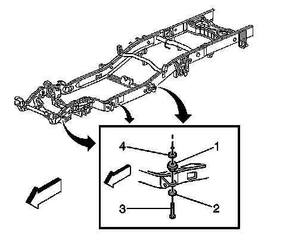

Drivetrain and Front Suspension Frame Insulator Replacement (Short Wheel Base)
Drivetrain and Front Suspension Frame Insulator Replacement (Short Wheel Base)
Removal Procedure
Important:Ensure that the vehicle is unloaded prior to body removal.
1.Remove the master cylinder. Perform the following steps:
1.1Remove the nuts retaining the master cylinder to the brake booster.
1.2Remove the master cylinder from the brake booster.
1.3Secure the cylinder away from the booster.
2.Raise the vehicle on the hoist. Refer to Lifting and Jacking the Vehicle .
3.Remove the park brake equalizer intermediate cable. Perform the following steps:
3.1Remove the nut from the park brake equalizer intermediate cable.
3.2Remove the intermediate cable from the equalizer.
3.3Depress the retaining tabs that secure the park brake cable to the frame.
3.4Pull slightly on the cable from the mounting area in order to provide slack for body movement without binding the cable.

1.Remove the body mount bolts.
2.Properly support the body in the area that the mounts will be replaced.
Caution:When you remove the body cushions, do NOT separate the frame from the body more than is necessary. Possible personal injury and damage to multiple parts may result if you do not follow the guides outlined below:
-Intermediate steering shaft - Do not allow the shaft to extend more than 25 mm (1 in).
-Fuel tank filler hose - Do not stretch the hose excessively.
-Tail/Turn signal lamp wiring/rear lamps junction block - Leave slack in the wires.
-Park brake cable - Leave slack in the cable.
-Body ground straps - Leave slack in the wire.
3.Lower the chassis accordingly in order to remove the cushions (1) as necessary.
Installation Procedure
1.Install the cushions (1) as necessary and raise the chassis accordingly.
2.Perform the following procedure before installing the bolts.
2.1Remove all traces of the original adhesive patch.
2.2Clean the threads of the bolt with denatured alcohol or equivalent and allow to dry.
2.3Apply threadlocker GM P/N 12345493 (Canadian P/N 10953488).
Notice:Refer to Fastener Notice .
3.Install the body mount bolts.
TightenTighten the bolts to 95 N �m (70 lb ft).
4.Install the park brake equalizer intermediate cable. Perform the following steps:
4.1Pull rearward on the park brake cable to the original position.
4.2Secure the cable retaining tabs to the frame.
4.3Install the intermediate cable end to the equalizer.
4.4Install the nut to the threaded end of the intermediate cable.
TightenTighten the nut to 4 N �m (31 lb in).
5.Lower the vehicle.
6.Install the master cylinder. Perform the following steps:
6.1Mount the master cylinder to the brake booster.
6.2Install the master cylinder mounting nuts.
TightenTighten the nuts to 36 N �m (27 lb ft).